Each of the six true-crime detectors now recognises more of the ways a script can say the same thing. The new forms are tried only when the original Javits form finds nothing, so the approved Javits graphics are unchanged: 97 of 97 stills pixel-identical. Every word on screen still comes from the narration. A span of time is shown only when the script's own dates confirm it.
| Project | Before (v0.4.65) | After (v0.4.66) |
|---|---|---|
| Javits (approved) | 6 graphics | No change: the same plan and pixel-identical stills |
| Bismilah | 5 graphics, no Findings | 6 graphics: Findings added (“What detectives said”); the Turning Point reads the age 14 from “was fourteen” |
Third script (fictional sheriff's-office case, tests/fixtures/sheriff-script.md) | 2 graphics (Timeline, Legal) | All six |
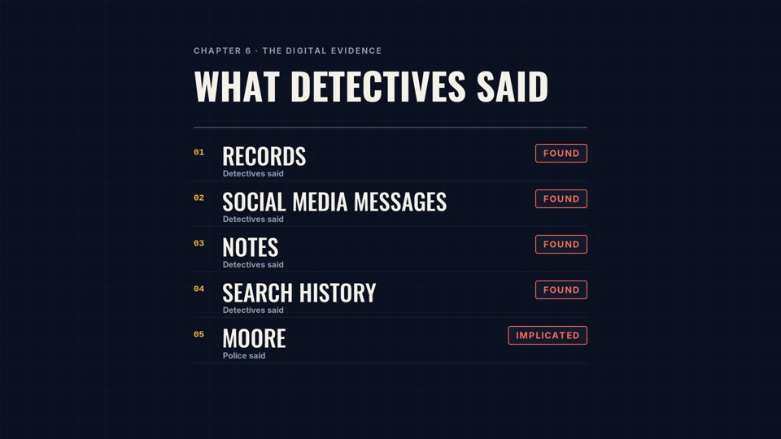
New Findings: from “Detectives reported finding records …, along with social media messages, notes and search history” and “Police said the material implicated Moore”. The source is “Detectives”, not a person, so no portrait is asked for and the column is centred.
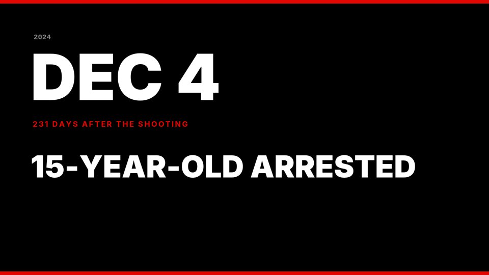
Turning Point: unchanged on screen. The age (14, from “Jevario Buie was fourteen”) now shows in the photo caption once there's a photo.
A sheriff's office and deputies, “persons of interest”, “remains under investigation”, a magistrate, bond, a plea, “more than five months”. Before v0.4.66 only the Timeline and Legal graphics were placed.
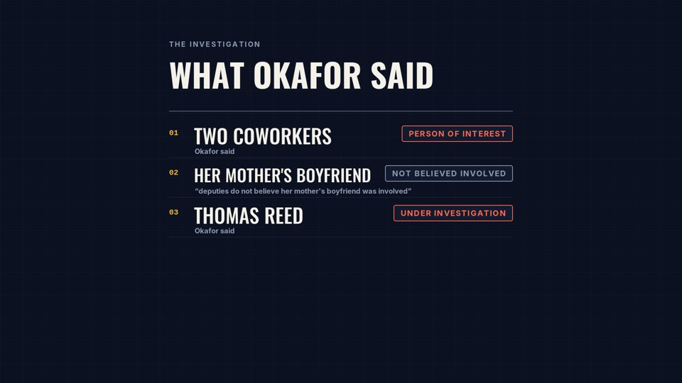
Findings: person of interest / not believed involved / under investigation. The heading names the agency from the sheriff's role.
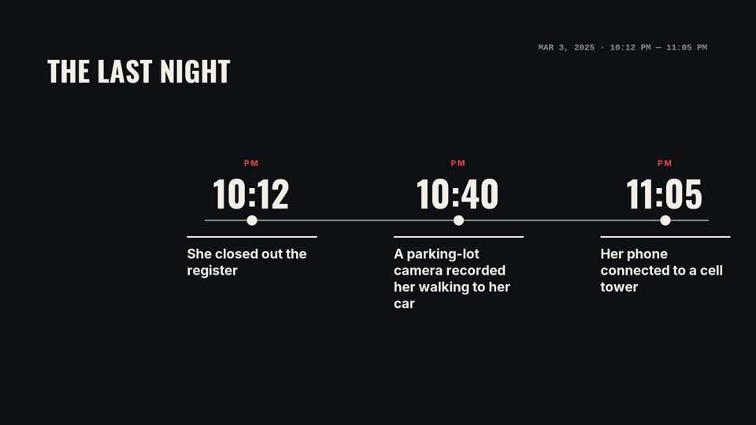
Timeline: clock times, PM taken from “that night”; “deputies said” left out of the label.
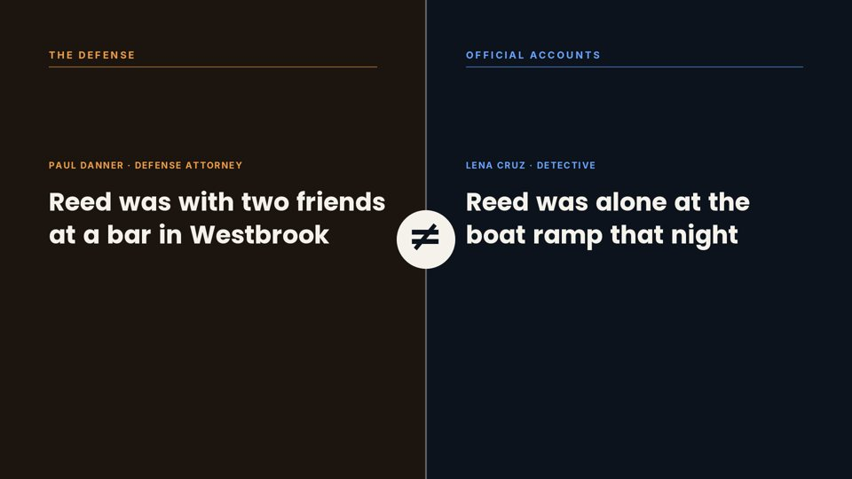
Conflicting accounts: “alone” against “with two friends” (no “not” needed).
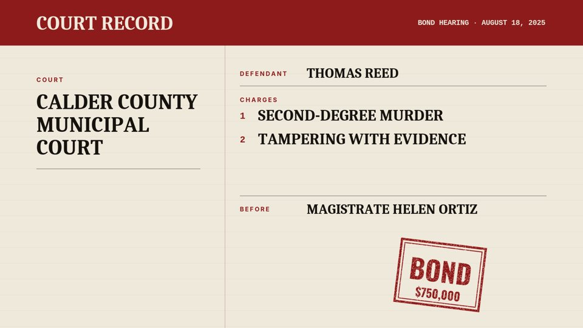
Legal: Magistrate, bond hearing, the BOND $750,000 stamp; an adult named with an adult age is named.
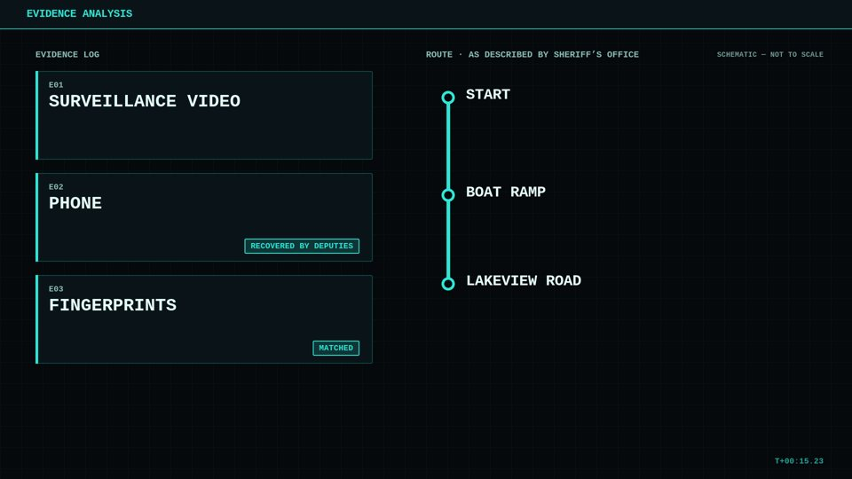
Digital: each item's status from its own sentence (RECOVERED BY DEPUTIES, MATCHED), new moves (headed to, walked to), “described by Sheriff's Office”.
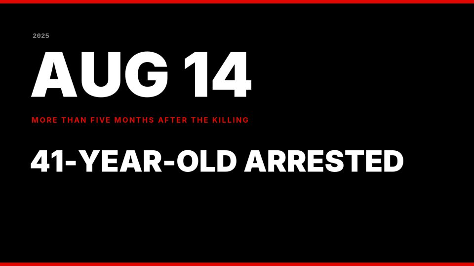
Turning Point: “MORE THAN FIVE MONTHS AFTER THE KILLING”, the narration's own words, checked against the dates (158 days).
Those graphics type each statement in time with the narration, so a frame taken before the words are spoken shows an empty box. In Bismilah the legal docket's charge, “murder”, comes at the end of the sentence, so its line stays empty until about 11.5 s.
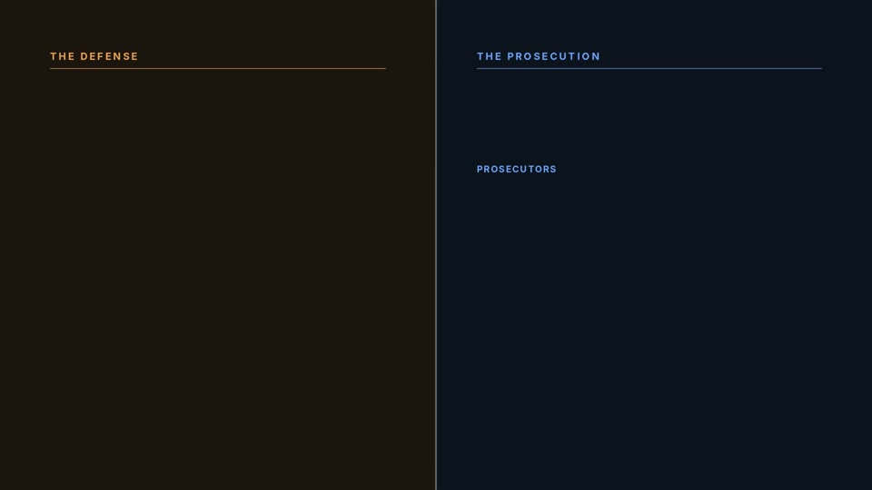
Contradiction at 3 s: nothing spoken yet
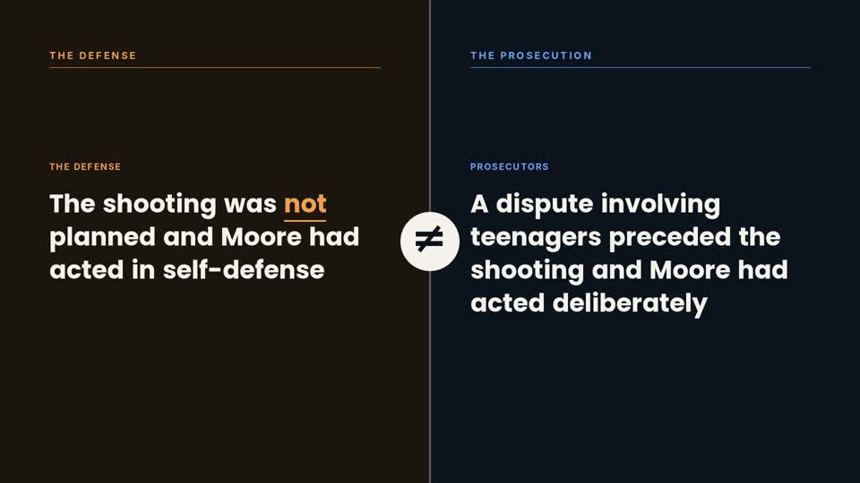
at 12.5 s: both accounts filled in
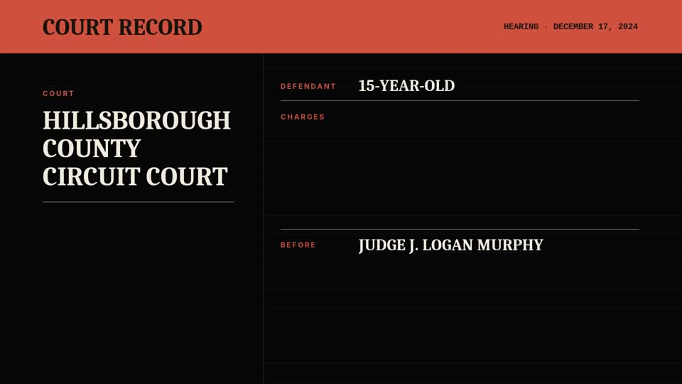
Legal at 9 s: the charge not spoken yet
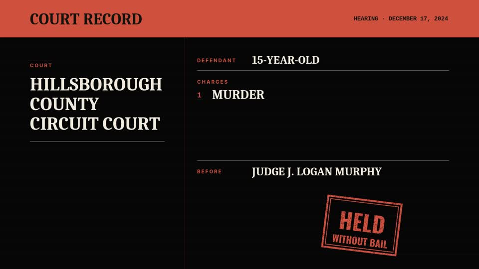
at 12 s: MURDER, then the HELD WITHOUT BAIL stamp